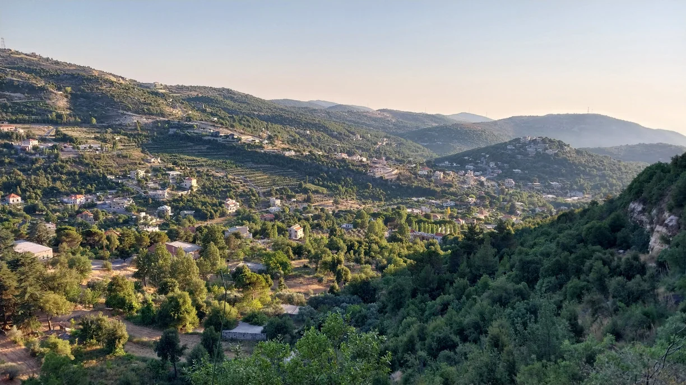

LEHFED · MOUNT LEBANON
A walk through
faith, history
& nature.
Discover the Brother Estephan Trail.
One village. Countless stories along the way.
01 / THE STORY
More than a hike.
A village to discover.
In the mountains of Mount Lebanon, Lehfed brings together the history, faith and traditions of an old Maronite village.
Follow village paths past historic churches, traces of rural life and beautiful landscapes. The Brother Estephan Trail is a journey through the identity and natural richness of this mountain village.
Brother Estephan Trail · by Thomas Matar
02 / ALONG THE WAY
Every stop tells a story.
Explore the religious, historical and natural places listed in the trail project.
03 / FIND YOUR PATH
15 kilometres.
A different perspective.
A route connecting village heritage with the surrounding landscape, at elevations of 950–1,100 metres.
This is the overview map from the original project. It is not a live navigation map or a GPS track.
A CLOSER LOOK
Scenes from the trail.
04 / CARING FOR THE TRAIL
Making the way.
The project outlines clearing work across six zones, stone borders and painted direction signs.
Figures below are from the project document; they are not a live report of completed work. The zone times describe clearing work, not hiking times.
Zone 1 600 m · 6 hours
Tree pruning, removing thorns and weeding.
Zone 2 600 m · 6 hours
Tree pruning, removing thorns and weeding.
Zone 3 500 m · 5 hours
Removing thorns and weeding.
Zone 4 400 m · 4 hours
Tree pruning, removing thorns and weeding.
Zone 5 500 m · 4 hours
Weeding.
Zone 6 700 m · 5 hours
Removing thorns and weeding.
05 / BEFORE YOU SET OUT
Walk thoughtfully.
Leave only footprints.
Respect places of worship, village life and the natural landscape. Stay on established paths and take your litter home.
The source document does not provide a confirmed trailhead, GPS file, opening schedule or current trail conditions. Confirm access locally before setting out.
Find Lehfed on Google Maps ↗Village location only; not turn-by-turn trail directions.Your walking checklist
Tick items as you prepare.
0 of 5 ready